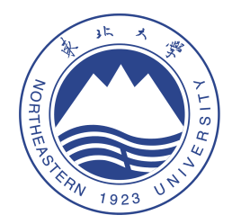
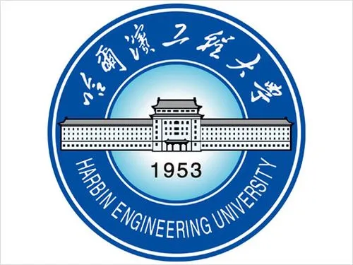

博士研究生,共青团员 |
我目前在东北大学计算机科学与工程学院攻读博士学位，师从王大玲教授。 本人已于2022年6月从东北大学 计算机科学与工程学院获得硕士学位。 在此之前, 我于2020年6月在 哈尔滨工程大学 计算机科学与技术学院 计算机科学与技术专业获得了学士学位。
我的研究兴趣主要包括: 机器学习可解释性, 事后解释方法, 反事实解释, 因果推断 等。
|  | 硕士 东北大学 (2020.9 ~ 2022.6)
|
|  | 本科 哈尔滨工程大学 (2016.8 ~ 2020.6)
|
生成链接树：一种高数据真实性的反事实解释生成方法
王明, 武文芳, 王大玲, 冯时, 张一飞
计算机科学 , 2022. [CCF T2]
中美贸易战中的重商主义
夏馨, 李楚璠, 王明
商业故事, 2018. [PDF]
基于TRIZ理论的狭小空间探测救援机器人
李晋, 马超, 张驰, 王明, 程建华, 白玉
国家发明专利, 公开号:CN110947118A
一种智能省电插排
李铁磊, 赵坤龙, 王元昔, 王明
国家实用新型专利, 公开号:CN208226228U
基于GAN生成对抗网络的装修模拟系统
王明, 马超, 李化锋, 刘庆伟
软件著作权, 登记号:2019SR0458487
物联网教学实验箱(201810217141)
负责人; 级别：国家级
国家级大学生创新训练项目
基于物联网的智能家居系统(201810217140)
主要参与人; 级别:国家级
国家级大学生创新训练项目
吸附式水下船体表面检测机器人(201810217024)
主要参与人; 级别:国家级
国家级大学生创新训练项目
蚁游旅行(201810217256)
主要参与人; 级别:国家级
国家级大学生创业训练项目
基于深度学习算法的室内空间优化及美化系统(Z-2018-039)
负责人; 级别:校级
哈尔滨工程大学学生创新训练项目(重大型)